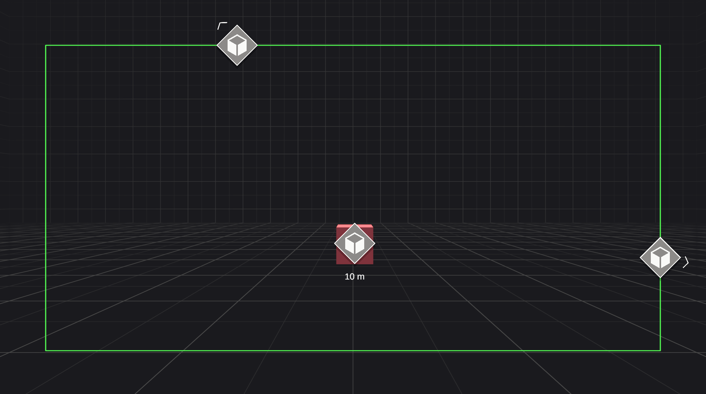
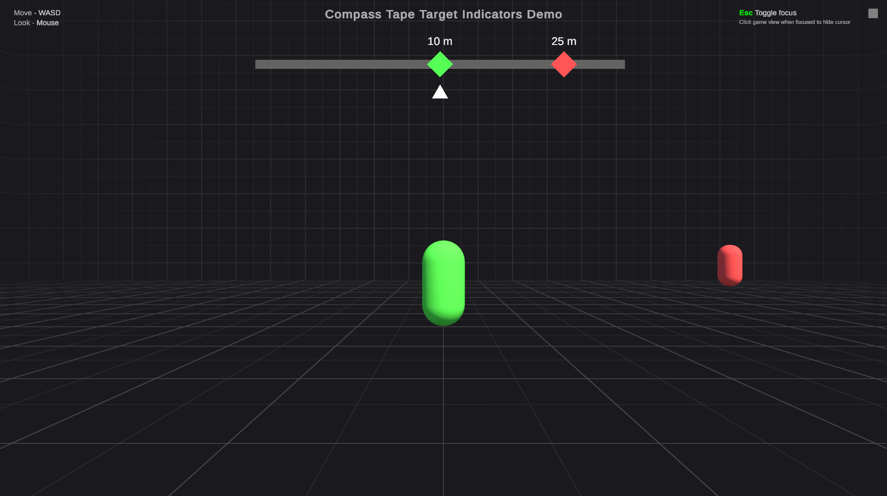

Get started
The pages in this section walk you through setting up a scene with working target indicators, step by step.
Tip
If you use an AI coding agent, it can do this setup for you. Refer to AI agent skill to learn how to give your agent the included skill.
Target indicators and visual indicators
Each setup uses two managers that work together. The Target Indicator Manager tracks your targets and calculates a target indicator for each one, which is the data that describes where the target is on screen. The Visual Indicator Manager from the samples reads those target indicators and creates a visual indicator for each one, which is the UI element you see on screen.
Keep this difference in mind as you follow the steps. The target indicator manager decides what's tracked and where, and the visual indicator manager decides how it looks. For a fuller explanation, refer to Target indicators and visual indicators.
Before you begin
Make sure Target Indicators is in your project, including its samples. Refer to Install package if you haven't installed it yet. The visual indicators use TextMeshPro to show the distance to each target, so also import the TextMeshPro essentials from Window > TextMeshPro > Import TMP Essential Resources.
Open the scene you want to add indicators to. It needs a camera and a few objects for the indicators to point at. If you're trying this in a new scene, create three cubes from GameObject > 3D Object > Cube and move them apart so that at least one is out of the camera's view.
Choose a setup
If you're not sure which to choose, start with screen indicators. You can use both in the same scene, each with its own target indicator manager.
Screen indicators
Visual indicators sit on top of your targets while they're on screen. When a target goes off screen, its visual indicator moves to the edge of the screen, inset by a padding you choose, with an arrow pointing toward the target. This is the setup in the Simple Demo scene.

To set it up, follow Set up screen indicators.
Compass tape
A horizontal bar across the top of the screen shows the direction of each target, like the compass in many first-person games. As the player turns, the visual indicators slide along the tape. This is the setup in the Compass Tape Demo scene.

To set it up, follow Set up a compass tape.